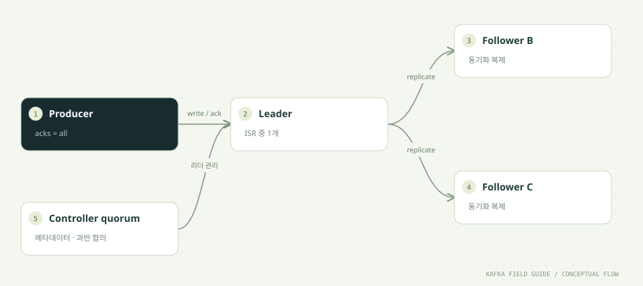

이 단원을 마치면
- 데이터 복제와 Consumer 분담을 구분한다
- acks=all과 min.insync.replicas를 함께 설명한다
- 한 노드 중단과 두 노드 중단의 차이를 이해한다
01 / UNDERSTAND먼저, 원리를 이해합니다.
파티션마다 Leader와 복제본이 있습니다
Producer와 Consumer는 메타데이터로 파티션 Leader를 찾습니다. Follower는 Leader의 로그를 복제합니다. 복제 수 3은 데이터 복제본 3개라는 뜻이며, 같은 그룹이 이벤트를 3번 업무 처리한다는 의미가 아닙니다.
ISR은 현재 동기화된 복제본 집합입니다
acks=all은 현재 ISR에 포함된 복제본의 확인 조건입니다. min.insync.replicas=2이면 쓰기를 받아들이기 위해 적어도 2개의 ISR이 필요합니다. 복제 수만 3으로 놓고 최소 ISR을 고려하지 않으면 기대한 내구성과 다를 수 있습니다.
KRaft의 메타데이터 합의도 필요합니다
Controller quorum은 클러스터 메타데이터를 관리합니다. 이 실습의 3개 노드는 broker와 controller 역할을 겸합니다. 한 노드 장애는 과반을 유지하지만 두 노드를 중단하면 controller 과반도 잃습니다. 따라서 두 노드 중단 결과를 ISR 조건 하나만으로 해석하지 마세요.
학습용 combined 구성입니다
운영 중요도가 높은 환경에서는 controller와 broker 역할 분리, 장애 도메인 분산, 디스크·네트워크·복구 시간·백업·보안까지 검토합니다. 여기서는 로컬 한 PC의 컨테이너 3개로 동작을 관찰하며 실제 머신 장애 격리를 재현하지 않습니다.
02 / FOLLOW THE EVENT데이터의 이동을 따라갑니다.


원리를 이해하기 위한 단계 모델입니다. 네트워크 시간이나 장애 판정을 재현하지 않습니다.
정상 노드 수와 쓰기 조건
Follower가 동기화된 정상 상태를 가정한 combined 구성의 설명용 모델입니다. 실제 장애 판정에는 시간이 걸립니다.
03 / READ THE CODE현업 패턴을 코드로 읽습니다.
아래 코드는 함께 제공된 실행 소스에서 발췌했습니다. 전체 클래스와 설정은 소스 파일에서 확인할 수 있습니다.
for (String name : List.of("orders", "orders.retry", "orders.dlt", "orders.tx", "orders.counts")) {
if (!existing.contains(name)) {
topics.add(new NewTopic(name, 3, rf).configs(Map.of(
"min.insync.replicas", rf == 1 ? "1" : "2",
"retention.ms", "604800000")));
}
}
if (!topics.isEmpty()) admin.createTopics(topics).all().get();소스: 초급/src/main/java/study/kafka/TopicAdmin.java · 15행부터
- -Cluster 실행 시 REPLICATION_FACTOR=3이 주입되며 사용자 토픽의 min.insync.replicas는 2입니다.
- offsets와 transaction state 내부 토픽도 클러스터 환경에서는 복제 수 3으로 구성했습니다.
- INTERNAL은 Docker 서비스 주소, EXTERNAL은 호스트 localhost 주소입니다. advertised.listeners는 클라이언트가 실제 도달할 수 있는 주소여야 합니다.
04 / MAKE IT REAL이제, 직접 확인합니다.
PowerShell에서 저장소 루트로 이동한 뒤 실행하세요. 01단원의 up → build → init이 선행되어야 합니다. 종료된 환경은 up으로 다시 시작합니다. 이후 단원의 max=0은 입력이 끊긴 뒤 25초까지 읽습니다. 대응 실습 안내 파일 ↗
01. 3노드 환경 시작
.\실습\study.ps1 up -Clusterkafka1~3과 postgres가 healthy가 됩니다. PC 자원이 충분해야 합니다.
02. 클러스터 토픽 생성
.\실습\study.ps1 init -Cluster복제 수 3, ISR 3인 토픽을 확인합니다.
03. Leader 조회
.\실습\study.ps1 topics -Clusterorders 파티션별 Leader ID를 기록합니다.
04. 한 노드 중단
.\실습\study.ps1 stop kafka1예시로 kafka1을 중단합니다. 실제 Leader가 다른 노드라면 그 노드를 선택하세요.
05. 장애 중 전송
.\실습\study.ps1 run -Cluster producer 6 orders failover-demo메타데이터 갱신 후 전송 성공 여부와 일시 재시도 로그를 관찰합니다.
06. 복구
.\실습\study.ps1 start kafka1잠시 후 topics -Cluster로 ISR이 회복되는지 확인합니다.
한 걸음 더 실험하기
- single과 cluster는 서로 다른 로그 볼륨을 사용합니다. cluster의 그룹과 토픽은 별도로 시작합니다.
- 두 노드 중단은 controller 과반도 잃으므로 별도의 복구 실험으로 구분하세요. 반드시 중단한 노드를 모두 start로 복구합니다.
05 / CHECK YOUR UNDERSTANDING설명할 수 있으면, 내 지식입니다.
acks=all에서 all이 가리키는 대상은?
원리를 읽고 실습 결과를 확인했나요?
학습 기록은 이 브라우저에만 저장됩니다.